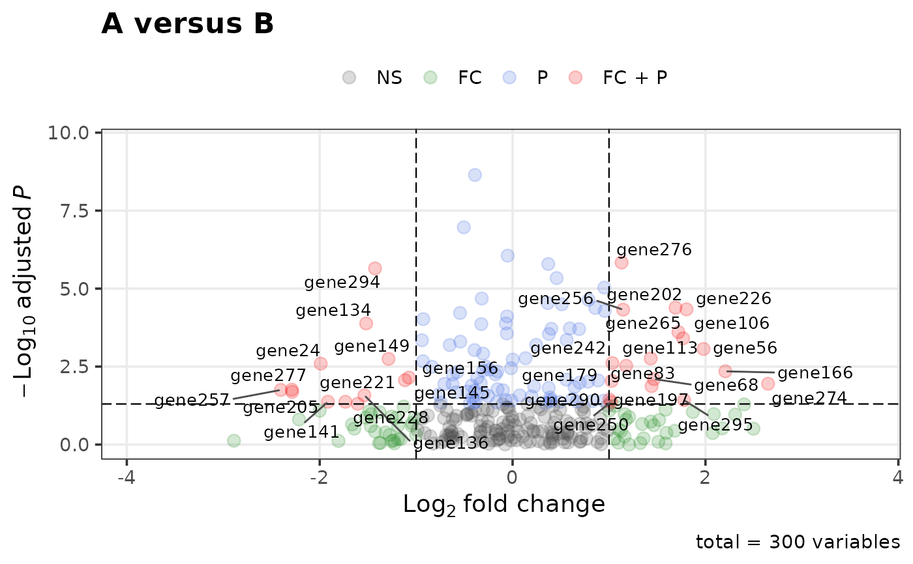

Plots log fold change against -log10 adjusted p-value, colouring points by
whether they pass the fold-change cutoff, the significance cutoff, both or
neither, and labelling genes with ggrepel (when installed).
Usage
volcano_plot(
data,
x = "logFC",
y = "FDR",
labels = rownames(data),
label_genes = NULL,
fc_cutoff = 0.25,
p_cutoff = 0.05,
colours = c("grey30", "forestgreen", "royalblue", "red2"),
point_colours = NULL,
alpha = 0.2,
point_size = 3,
label_size = 3.5,
xlim = NULL,
ylim = NULL,
title = "Volcano plot",
subtitle = NULL,
caption = paste0("total = ", nrow(data), " variables"),
legend_position = "top"
)Arguments
- data
Data frame with a log fold change and an adjusted p-value column.
- x, y
Names of the fold-change and adjusted p-value columns.
- labels
Labels for the points; defaults to the row names of
data.- label_genes
Optional character vector of genes to label. If
NULL, all points passing both cutoffs are labelled.- fc_cutoff, p_cutoff
Absolute log fold change and adjusted p-value cutoffs.
- colours
Four colours for the groups NS, FC, P and FC + P, in that order.
- point_colours
Optional per-point colours, one per row of
data, whose names give each point's legend group (seecolour_volcano_points()). Overridescolours.- alpha, point_size
Point transparency and size (a single value, or one per row; see
alpha_volcano_points()andsize_volcano_points()).- label_size
Label text size.
- xlim, ylim
Optional axis limits. Defaults extend the data range.
- title, subtitle, caption
Plot annotations. The caption defaults to the number of points.
- legend_position
Legend position passed to
ggplot2::theme().
Value
A ggplot2::ggplot() object.
Details
Adjusted p-values of exactly 0 are replaced by a tenth of the smallest non-zero value, with a warning, so they can be drawn on a log scale.
Examples
set.seed(1)
res <- data.frame(logFC = rnorm(300), FDR = runif(300) ^ 3,
row.names = paste0("gene", 1:300))
volcano_plot(res, fc_cutoff = 1, title = "A versus B")
